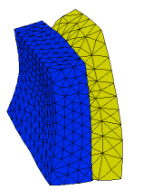

|
3d_bimetal |

  
|
|
3d_bimetal |
|
{ 3D_BIMETAL.PDE
This problem considers a small block of aluminum bonded to a larger block
of iron. The assembly is held at a fixed temperature at the bottom, and
is convectively cooled on the sides and top. We solve for the 3D temperature
distribution, and the associated deformation and stress.
All faces of the assembly are unconstrained, allowing it to grow as the
temperature distribution demands. We do not use an integral constraint
to cancel translation and rotation, as we have done in 2D samples,
because in 3D this is very expensive. Instead, we let FlexPDE find a solution,
and then remove the mean translation and rotation before plotting.
}
title 'Bimetal Part'
coordinates cartesian3
select painted { show color-filled contours }
variables Tp { temperature difference from stress-free state } U { X displacement } V { Y displacement } W { Z displacement }
definitions long = 1 wide = 0.3 high = 1 tabx = 0.2 taby = 0.4 |
 |
K { thermal conductivity }
E { Youngs modulus }
alpha { expansion coefficient }
nu { Poisson's Ratio }
Q = 0 { Thermal source }
Ta = 0. { define the ambient thermal sink temperature }
{ define the constitutive relations }
G = E/((1+nu)*(1-2*nu))
C11 = G*(1-nu)
C12 = G*nu
C13 = G*nu
C22 = G*(1-nu)
C23 = G*nu
C33 = G*(1-nu)
C44 = G*(1-2*nu)/2
b = G*alpha*(1+nu)
{ Strains }
ex = dx(U)
ey = dy(V)
ez = dz(W)
gxy = dy(U) + dx(V)
gyz = dz(V) + dy(W)
gzx = dx(W) + dz(U)
{ Stresses }
Sx = C11*ex + C12*ey + C13*ez - b*Tp
Sy = C12*ex + C22*ey + C23*ez - b*Tp
Sz = C13*ex + C23*ey + C33*ez - b*Tp
Txy = C44*gxy
Tyz = C44*gyz
Tzx = C44*gzx
{ find mean translation and rotation }
Vol = Integral(1)
Tx = integral(U)/Vol { X-motion }
Ty = integral(V)/Vol { Y-motion }
Tz = integral(W)/Vol { Z-motion }
Rz = 0.5*integral(dx(V) - dy(U))/Vol { Z-rotation }
Rx = 0.5*integral(dy(W) - dz(V))/Vol { X-rotation }
Ry = 0.5*integral(dz(U) - dx(W))/Vol { Y-rotation }
{ displacements with translation and rotation removed }
{ This is necessary only if all boundaries are free }
Up = U - Tx + Rz*y - Ry*z
Vp = V - Ty + Rx*z - Rz*x
Wp = W - Tz + Ry*x - Rx*y
{ scaling factors for displacement plots }
Mx = 0.2*globalmax(magnitude(y,z))/globalmax(magnitude(Vp,Wp))
My = 0.2*globalmax(magnitude(x,z))/globalmax(magnitude(Up,Wp))
Mz = 0.2*globalmax(magnitude(x,y))/globalmax(magnitude(Up,Vp))
Mt = 0.4*globalmax(magnitude(x,y,z))/globalmax(magnitude(Up,Vp,Wp))
initial values
Tp = 5.
U = 1.e-5
V = 1.e-5
W = 1.e-5
equations
Tp: div(k*grad(Tp)) + Q = 0. { the heat equation }
U: dx(Sx) + dy(Txy) + dz(Tzx) = 0 { the U-displacement equation }
V: dx(Txy) + dy(Sy) + dz(Tyz) = 0 { the V-displacement equation }
W: dx(Tzx) + dy(Tyz) + dz(Sz) = 0 { the W-displacement equation }
extrusion z = 0,long
boundaries
surface 1 value(Tp)=100 { fixed temp bottom }
surface 2 natural(Tp)=0.01*(Ta-Tp) { poor convective cooling top }
Region 1 { Iron }
K = 0.11
E = 20e11
nu =0.28
alpha = 1.7e-6
start(0,0)
natural(Tp) = 0.1*(Ta-Tp) { better convective cooling on vertical sides }
line to (wide,0)
to (wide,(high-taby)/2)
to (wide+tabx,(high-taby)/2)
to (wide+tabx,(high+taby)/2)
to (wide,(high+taby)/2)
to (wide,high)
to (0,high)
to close
Region 2 { Aluminum }
K = 0.5
E = 6e11
nu =0.25
alpha = 2*(2.6e-6) ! Exaggerate expansion
start(wide,(high-taby)/2)
line to (wide+tabx,(high-taby)/2)
to (wide+tabx,(high+taby)/2)
to (wide,(high+taby)/2)
to close
monitors
contour(Tp) on y=high/2 as "Temperature"
contour(Up) on y=high/2 as "X-displacement"
contour(Vp) on x=4*wide/5 as "Y-displacement"
contour(Wp) on y=high/2 as "Z-displacement"
grid(x+My*Up,z+My*Wp) on y=high/2 as "XZ Shape"
grid(y+Mx*Vp,z+Mx*Wp) on x=wide/2 as "YZ Shape"
grid(x+Mz*Up,y+Mz*Vp) on z=long/4 as "XY Shape"
grid(x+Mt*Up,y+Mt*Vp,z+Mt*Wp) as "Shape"
plots
contour(Tp) on y=high/2 as "XZ Temperature"
contour(Up) on y=high/2 as "X-displacement"
contour(Vp) on x=4*wide/5 as "Y-displacement"
contour(Wp) on y=high/2 as "Z-displacement"
grid(x+My*Up,z+My*Wp) on y=high/2 as "XZ Shape"
grid(y+Mx*Vp,z+Mx*Wp) on x=4*wide/5 as "YZ Shape"
grid(x+Mz*Up,y+Mz*Vp) on z=long/4 as "XY Shape"
grid(x+Mt*Up,y+Mt*Vp,z+Mt*Wp) as "Shape"
contour(Sx) on y=high/2 as "X-stress"
contour(Sy) on y=high/2 as "Y-stress"
contour(Sz) on y=high/2 as "Z-stress"
contour(Txy) on y=high/2 as "XY Shear stress"
contour(Tyz) on y=high/2 as "YZ Shear stress"
contour(Tzx) on y=high/2 as "ZX Shear stress"
end